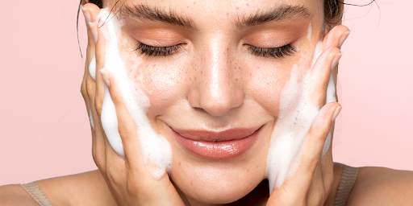

CHĂM SÓC DA MỤN Chăm sóc da mụn là việc làm rất quan trọng để giúp bảo vệ làn da và hạn chế những tổn thương nặng trên da. Tuy nhiên, cần phải hiểu được những việc nên làm hay không nên làm khi chăm sóc da mụn để góp phần vào nâng cao hiệu quả trong việc phục hồi lại da.  Rửa vùng da bị mụn ít nhất 2 lần/ ngày: 1 lần vào buổi sáng, lần còn lại vào buổi chiều tối lúc đi tắm hay sau khi đi học, đi làm về. Rửa sạch da ngay sau khi bạn vừa chơi thể thao hoặc tham gia các hoạt động đổ nhiều mồ hôi. Ngoài ra, bạn cũng chú ý vệ sinh các dụng cụ thể thao (đệm vai, dây đeo mũ bảo hiểm…) và vật dụng xung quanh thường tiếp xúc với da vì chúng có thể khiến tình trạng mụn nặng hơn. Rửa mặt quá nhiều lần trong ngày hay quá ít và không thường xuyên đều dẫn tới nguy cơ nổi mụn. Để chăm sóc a mụn đúng cách, bạn nên: Sản phẩm nào sẽ phù hợp để chăm sóc da mụn? Hãy sử dụng các loại xà phòng hoặc dung dịch dịu nhẹ để rửa mặt (chỉ sử dụng sữa rửa mặt dược liệu khi bác sĩ kê toa) và tránh sử dụng các loại xà phòng khử mùi thô ráp. Bạn cũng không nên sử dụng các loại sản phẩm tẩy da chết thô ráp hay chứa các hạt phân tử siêu nhỏ vì chúng có thể gây kích ứng da. Các sản phẩm “làm sạch mụn” đang được bày bán trên thị trường thường chứa acid salicylic hoặc benzol peroxide. Các chất này có thể hữu ích trong việc loại bỏ bã nhờn khỏi da và giảm thiểu vi khuẩn nhưng chúng cũng có thể làm khô và tăng kích ứng da. Bạn hãy lựa chọn sản phẩm theo khuyến cáo đặc biệc của bác sĩ và bôi kem trị mụn đúng cách để an toàn và hiệu quả. Khi sử dụng các loại mỹ phẩm trang điểm cho da mụn, chất dưỡng ẩm hoặc kem chống nắng, bạn cần chắc chắn các sản phẩm này có ghi chú “không sinh nhân mụn” hoặc “không gây tắc lỗ chân lông”. Nếu bạn không chọn đúng sản phẩm phù hợp với da của mình, chúng có thể “phản tác dụng” và khiến tình trạng mụn của bạn nặng nề hơn. Dưới đây là những điều mà bạn cần lưu ý khi chọn sản phẩm chăm sóc da mụn: Thay đổi thói quen để chăm sóc da mụn hiệu quả Bên cạnh sử dụng những sản phẩm hỗ trợ điều trị mụn, thói quen chăm sóc da mụn đúng sẽ góp phần giúp bạn cải thiện tình trạng mụn đáng kể: Không chà xát da bằng khăn rửa mặt do có thể gây kích ứng da và mụn Cố gắng không nặn mụn Vệ sinh hoặc thay đổi áo gối Các phương pháp loại bỏ, thu nhỏ hay “làm sạch” lỗ chân lông KHÔNG được khuyến nghị. Bảo vệ da khỏi ánh nắng mặt trời.